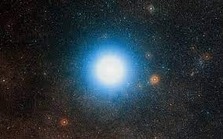

El universo es la suma de todas las cosas que existen, incluyendo la materia, la energía, el espacio y el tiempo. Es un sistema vasto y en constante expansión que contiene galaxias, estrellas, planetas, asteroides, cometas y otros objetos celestes. Se cree que el universo se originó a través del Big Bang hace alrededor de 13.8 mil millones de años y desde entonces ha evolucionado y se ha expandido. Nuestro conocimiento actual sobre el universo es limitado y sigue siendo objeto de investigación y exploración científica.
Su estudio, en las mayores escalas, es el objeto de la cosmología, disciplina basada en la astronomía y la física, en la cual se describen todos los aspectos de este universo con sus fenómenos. Las ciencias físicas modelizan el universo como un sistema cerrado que contiene energía y materia adscritas al espacio-tiempo y que se rige fundamentalmente por principios causales. Basándose en observaciones del universo observable, los físicos intentan describir el continuo espacio-tiempo en el que nos encontramos, junto con toda la materia y energía existentes en él.
La teoría científica más ampliamente aceptada sobre el origen del universo es la del Big Bang. Según esta teoría, el universo se originó hace aproximadamente 13.8 mil millones de años a partir de una singularidad extremadamente caliente y denso. En un momento inicial, todo el universo estaba concentrado en un punto infinitesimal y caliente, y luego experimentó una expansión acelerada y una rápida inflación. Conforme el universo se expandía, la temperatura y la densidad disminuyeron, permitiendo la formación de partículas subatómicas y, más tarde, de átomos. A medida que la expansión continuó, se formaron galaxias, estrellas y otros objetos cósmicos.
Es importante tener en cuenta que la teoría del Big Bang describe cómo el universo evolucionó a partir de un estado temprano extremadamente caliente y denso, pero no aborda el origen absoluto de la singularidad inicial. Las investigaciones sobre este tema siguen en curso, y los científicos están buscando respuestas más profundas a través de teorías como la cosmología cuántica y la teoría de cuerdas.
El universo está compuesto por varias estructuras a diferentes escalas. A continuación, mencionaré algunas de las principales:
Galaxias: Son enormes conjuntos de estrellas, gas, polvo cósmico y materia oscura. Las galaxias pueden tener diferentes formas, como espirales, elípticas o irregulares. Nuestra galaxia, la Vía Láctea, es solo una de las miles de millones de galaxias que se estima que existen en el universo.
Estrellas: Son cuerpos celestes que generan luz y calor mediante reacciones nucleares en su núcleo. Las estrellas varían en tamaño, masa y brillo. Nuestro Sol es una estrella de tamaño mediano.
Planetas: Son cuerpos celestes que orbitan alrededor de estrellas y no emiten luz propia. Son más pequeños que las estrellas y pueden tener superficies rocosas o gaseosas. Nuestro sistema solar tiene ocho planetas, incluido la Tierra.
Nebulosas: Son nubes de gas y polvo interestelar. Las nebulosas pueden ser lugares de formación estelar, donde nuevas estrellas y sistemas planetarios se están gestando.
Cúmulos y supercúmulos de galaxias: Los cúmulos de galaxias son agrupaciones de varias galaxias que están unidas gravitacionalmente. A su vez, los supercúmulos de galaxias son agrupaciones aún más grandes de cúmulos de galaxias.
| ESTRELLA | PLANETA | PLANETOIDE | ASTEROIDE |
|---|---|---|---|
| Es un astro o cuerpo que brilla con luz propia en el firmamento  | Orbita alrededor de una estrella o remanente de ella. Tiene suficiente masa para que su gravedad supere las fuerzas del cuerpo rígido, de manera que asuma una forma en equilibrio hidrostático, prácticamente esférica. Ha limpiado la vecindad de su órbita de planetesimales, o lo que es lo mismo, tiene dominancia orbital. No emite una luz propia. | Los planetas enanos, o planetoides, son cuerpos menores del sistema solar que giran alrededor del Sol. Son más pequeños que los planetas mayores pero más grandes que los meteoroides. A diferencia de los cometas, los planetas enanos no tienen una cola gaseosa distintiva y no exhiben actividad cometaria. | Los asteroides son partículas de roca y metal que viajan por el espacio. Son más pequeños que los cometas y se clasifican en dos categorías: de piedra o de hierro y níquel, aunque la mayoría de los asteroides tienen elementos de ambas clasificaciones. Pueden orbitar alrededor de un planeta o viajar sin rumbo por el sistema solar. Cuando los asteroides ingresan a la atmósfera de la Tierra u otro planeta y llegan a la superficie, se les denomina meteoritos. A diferencia de los planetas enanos y los cometas, los asteroides típicamente son demasiado pequeños para formar una esfera. |